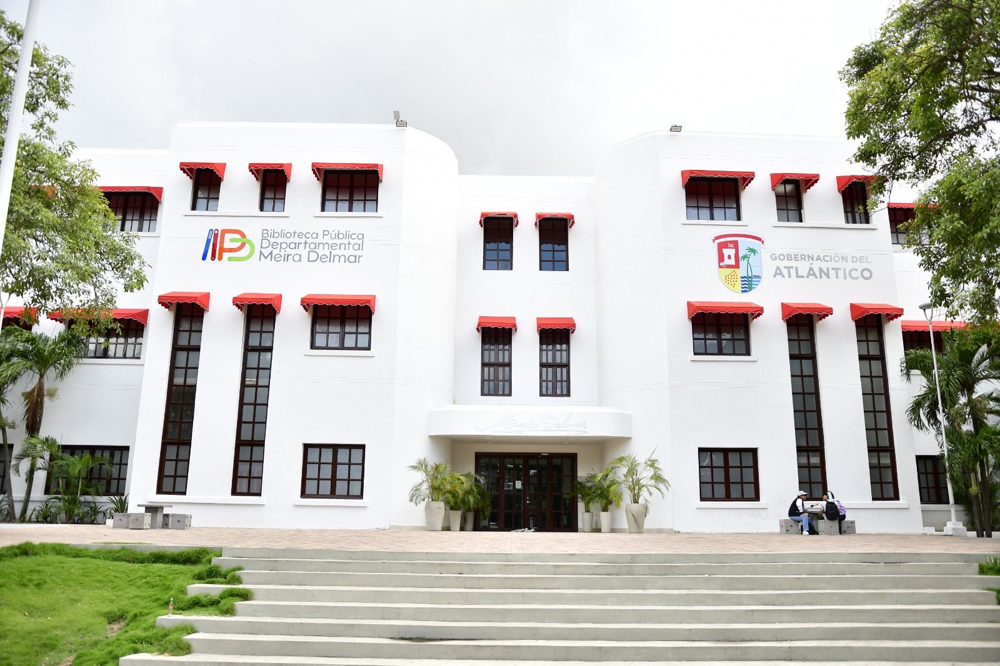

La Biblioteca
Dos historias que nacieron en 1922
La biblioteca abrió sus puertas el mismo año en que nació Meira Delmar. Ella la dirigió durante 36 años y hoy la biblioteca lleva su nombre y guarda su memoria.
Origen
Un siglo al servicio de la lectura
La Biblioteca Departamental del Atlántico fue creada el 16 de abril de 1921 mediante la Ordenanza N.º 12 de la Asamblea del Atlántico, por iniciativa de los diputados Adalberto del Castillo y Juan B. Fernández Ortega. Abrió al público el 1 de octubre de 1922, en un pequeño local frente al Parque San Nicolás.
Tras años sin sede propia, en 1945 se trasladó al edificio art déco frente al Parque Centenario, donde funciona hasta hoy. En las décadas de 1940 y 1950 fue lugar de encuentro de Gabriel García Márquez, Alejandro Obregón, Álvaro Cepeda, Germán Vargas y Alfonso Fuenmayor, quien la llamó una “subsede del Grupo de Barranquilla”.
-
Patrimonio de la Nación
Declarada Patrimonio Cultural y Educativo de la Nación por la Ley 889 de 2004.
-
Para todo el Atlántico
Atiende a Barranquilla y apoya las bibliotecas de los 22 municipios del departamento.
-
Lectura sin barreras
Cuenta con un aula tiflotecnológica con más de 400 libros en braille.
Línea del tiempo
Más de cien años de historia
-
1921
Creación
La Asamblea del Atlántico crea la Biblioteca Departamental con la Ordenanza N.º 12, del 16 de abril.
-
1922
Abre sus puertas y nace la poeta
El 1 de octubre la biblioteca se inaugura frente al Parque San Nicolás. Ese mismo año nace en Barranquilla Olga Chams Eljach, Meira Delmar.
-
1945
Casa propia
El 9 de enero se traslada al edificio art déco del Parque Centenario y empieza su época dorada con el Grupo de Barranquilla.
-
1958
Meira Delmar, directora
Invitada por el gobernador Néstor Madrid Malo, la poeta asume la dirección. La ejerce durante 36 años, hasta 1994.
-
1998
Lleva su nombre
El Decreto N.º 00924 la nombra Biblioteca Pública Departamental Meira Delmar.
-
2004
Patrimonio de la Nación
La Ley 889 del 7 de julio la declara Patrimonio Cultural y Educativo de la Nación.
-
2009
Adiós a la poeta
Meira Delmar muere en Barranquilla el 18 de marzo.
-
2014
Su memoria vuelve a casa
Abre el Museo – Centro de Documentación Meira Delmar, con sus manuscritos, fotografías y objetos personales.
-
Hoy
Una biblioteca en línea
Estrena portal web para acercar su historia, sus servicios y su catálogo a toda la ciudadanía.
Vida y obra
Meira Delmar (1922 – 2009)
Olga Isabel Chams Eljach nació en Barranquilla en 1922, hija de los inmigrantes libaneses Julián E. Chams e Isabel Eljach. Empezó a escribir a los 11 años y, en 1937, cuando sus primeros poemas se publicaron en la revista cubana Vanidades, adoptó el seudónimo que la haría conocida: Meira, una variación del nombre árabe Omaira, y Delmar, por su amor al mar.
Estudió música en el Conservatorio Pedro Biava e historia del arte y literatura en el Centro Dante Alighieri de Roma, y fue profesora de la Universidad del Atlántico. Su poesía, musical y serena, habla del amor, la memoria, el olvido y el mar.
Reconocimientos
- Doctorado Honoris Causa en Letras, Universidad del Atlántico (1971).
- Miembro de la Academia Colombiana de la Lengua (1989).
- Premio Nacional de Poesía, Universidad de Antioquia (1995).
- Medalla Gran Orden del Ministerio de Cultura (1998).
- Alba de olvido, entre las mejores obras colombianas del siglo XX según la revista Semana (1999).
Durante 36 años dirigió la biblioteca que hoy lleva su nombre.
Su obra poética
Alba de olvido
1942Sitio del amor
1944Verdad del sueño
1946Secreta isla
1951Huésped sin sombra
1971Reencuentro
1981Laúd memorioso
1995Alguien pasa
1998
Busca sus libros en nuestro catálogo en línea.
El edificio
Tres pisos de art déco en el Centro Histórico

-
Primer piso
Sala general de lectura (100 personas), sala infantil, aula tiflotecnológica y auditorio (114 personas).
-
Segundo piso
Sala de internet, sala audiovisual, aula multimedia, hemeroteca y el Museo – Centro de Documentación Meira Delmar.
-
Tercer piso y plazoleta
Centro de procesos técnicos y restauración, salón múltiple y una plazoleta para eventos al aire libre.
Quiénes somos
Misión y visión
-
Misión
Proteger la memoria colectiva del Atlántico recuperando, preservando y dando acceso a su patrimonio bibliográfico y hemerográfico; fortalecer las bibliotecas públicas municipales y atender las necesidades de información de las personas y comunidades.
-
Visión
Liderar, junto con las comunidades, la política de patrimonio, lectura y bibliotecas del departamento, facilitando el acceso a la información y promoviendo la cultura con tecnología moderna y servicios de calidad.
Ven a conocernos
Calle 38 N.º 38B-21, frente al Parque Centenario. Lunes a viernes, de 8:00 a. m. a 4:00 p. m.